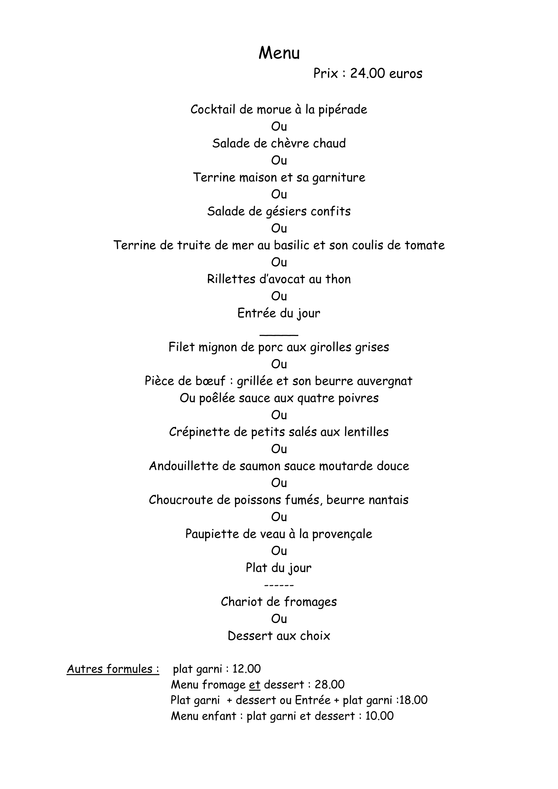
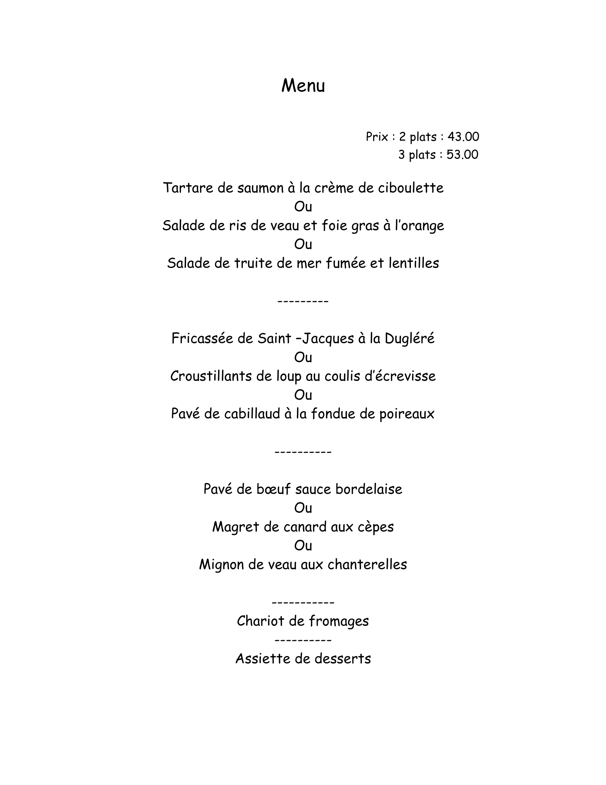

RESTAURANT
De type traditionnel
LE BILBOQUET vous propose
un menu varié , qui met en valeur
nos produits gastronomiques régionaux
(verveine, lentilles,...)
Nous proposons aussi des fondues et raclette
(au prix de 22 euros /personne)
sur réservation et sauf le dimanche

